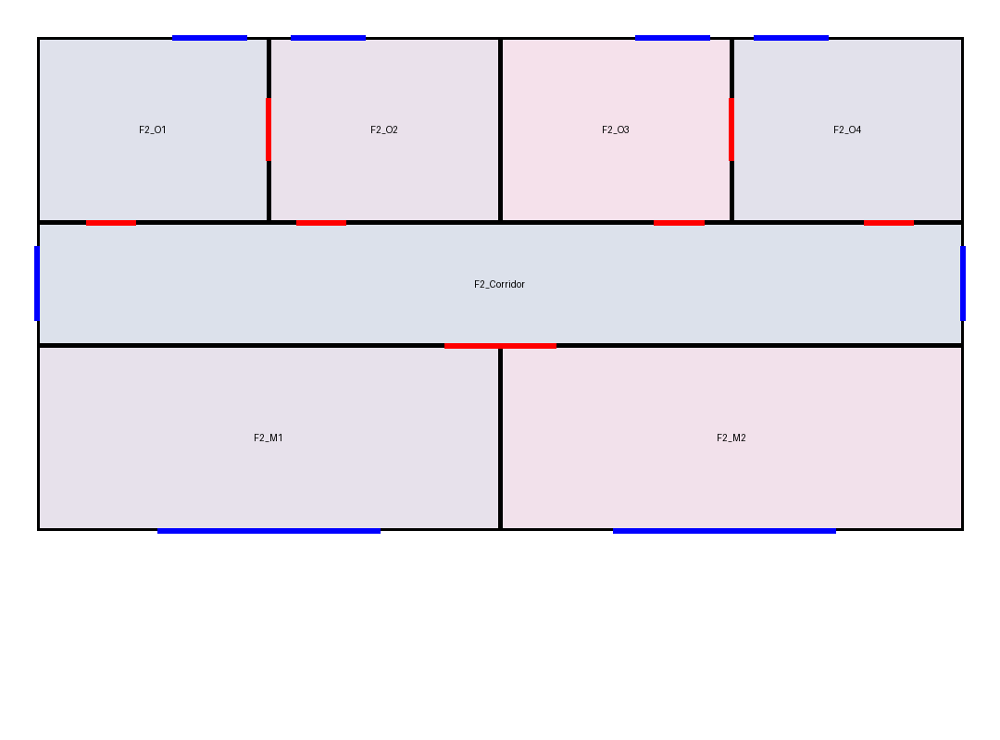

已生成可查看候选，原图保真未通过
第二版通过几何自洽检查，但二层南北分区放反，并多出了办公室之间的门。请把它当作待修实验候选，不能作为正确重建交付。主模型在 15 分钟时限结束，未完成最终回复。
14 个空间 · 15 扇窗 · 18 个门洞 · 2 次自主生成
模型从六张原图起跑，根据首版检查反馈修复了开口挂接问题。独立评价随后发现分区和连通仍不正确：几何自洽不等于读图准确。
二层方向和门洞需要修正
 原图：上方两间大房间，下方四间小房间。办公室之间没有图示门洞。
原图：上方两间大房间，下方四间小房间。办公室之间没有图示门洞。
候选：上下分区相反，小房间隔墙上多出了两处门洞（红色）。蓝色为窗。独立参照与开发助手原图核对均在评价侧使用，没有反馈给本次生成模型。门洞尚无完整自动参照，具体人工核对范围见过程记录。